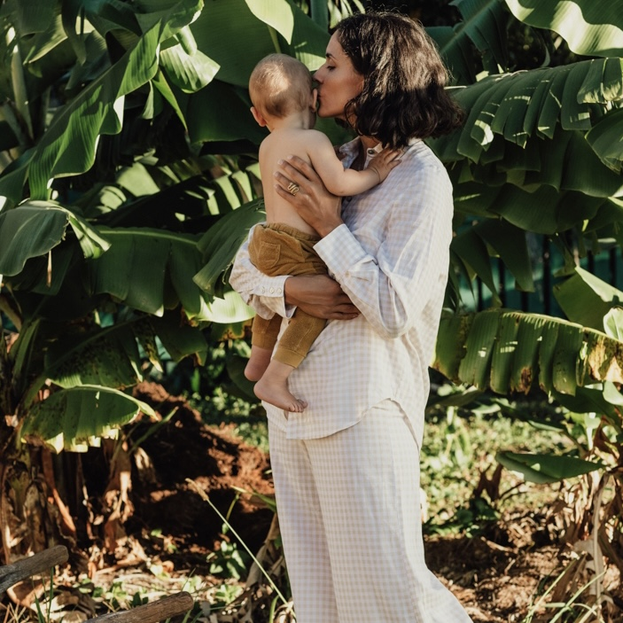
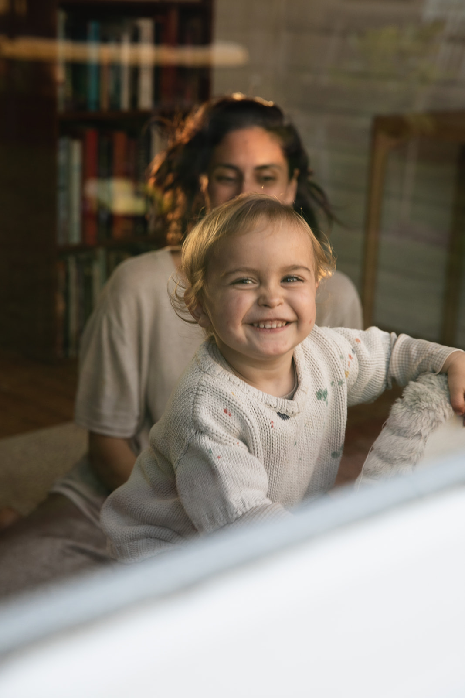

Support makes all the difference for mothers and their partners. With 13 years of experience supporting births across Byron Bay and Berlin, and a deeply personalised approach to every family.

Feel informed, confident, and ready for birth.
Nat has the most divine way of making you feel safe, informed, connected and fully in control.
Virtual $295 · In-Person $495

Less power struggles. Better sleep. More connection.
You just completely got everything I needed and made me feel calm and confident whenever I started to doubt myself.
Virtual Session $275
Nathalie gave support throughout the whole pregnancy, birth and postpartum period. She was calm and professional yet kind and warm and really helped support my partner so he could support me. As a GP I will be highly recommending Nathalie.
 Dr Camilla White
Dr Camilla WhiteNat has the most divine way of making you feel safe, informed, connected and fully in control. She is a wealth of knowledge, experience and intuition.
 Amy Sinclair
Amy SinclairI was visualising an intimate, drug-free water birth and my wish became a reality with the help of Nathalie. This was the best investment and I can highly recommend having this beautiful woman by your side.
 Cisco Tschurtschenthaler
Cisco TschurtschenthalerBook your 2-hour antenatal class today and gain the knowledge, confidence, and practical tools to approach labour with clarity and peace of mind. Your future self will thank you.
I respond within 1 business day.